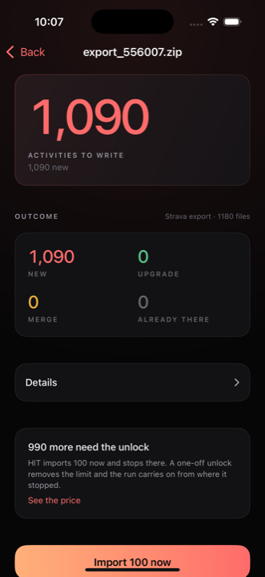
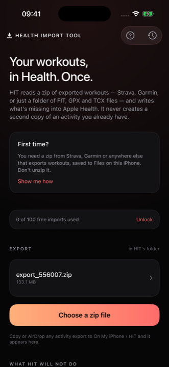
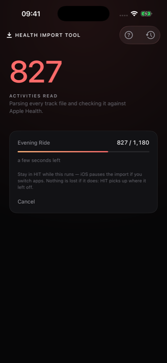
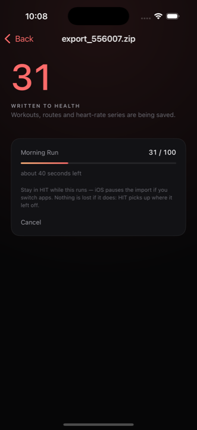
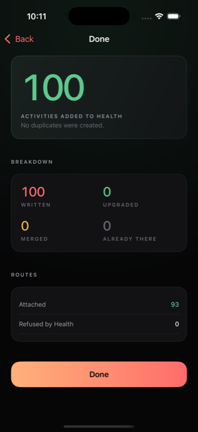

You have years of runs and rides in Strava, or Garmin, or a folder of files from a watch you no longer own. Health has some of them. Working out which is the job nobody wants to do by hand.
Coming to the App Store
First 100 workouts free. £4.99 once to remove the limit. Not a subscription.

What it does
Health Import Tool reads every file in the archive, checks each activity against what Apple Health already holds, and writes only what is missing. Run the same export twice and the second run writes nothing.
01
A Strava bulk export, a Garmin export, or any zip of FIT, GPX and TCX files. Folders or loose, it makes no difference. Do not unzip it.
02
Before a single workout is written you get the whole plan: what is new, what Health already has, and what cannot be touched.
03
Routes, heart rate, cadence and power go in with each workout. If it is interrupted it picks up exactly where it stopped.

A 133 MB Strava export, a Garmin download, or a folder of files off an old watch. Drop it into HIT through Files, or AirDrop it straight to the app. No unzipping, no renaming, no sorting anything into folders first.

HIT parses each track file, works out what the activity actually was, and checks it against Health. Only then does it show you the plan. Files it cannot read are reported rather than silently skipped.
The screen tells you how many are new, how many are already there, and how many Health has from another app and can only be added to. Then you decide.

A real estimate from the pace of the run in front of you, not a guess made at the start. And it says the true constraint out loud: stay in the app while it runs, because iOS pauses the work if you switch away.

Routes attached, routes Health refused, files that would not read, activities that turned out to be planned routes rather than recorded ones. Every number is the real one.
The whole point
This is the part that makes importing years of history bearable. Every activity carries an identity stamp, so HIT can always tell its own work from everyone else's, and tell a re-import from a new one.
Matched and left alone. A workout your watch recorded stays exactly as it is.
Replaced with the fuller version. The replacement is saved before the old one is removed, so an interruption can never lose the workout.
HIT adds the heart rate, cadence and power that are missing, one workout at a time, with your say-so on each.
There is no case in which running the same export twice produces two workouts.
What it will not do
Worth knowing before you buy, because they cannot be worked around by us or by anyone else.
Get your data
This is the part that stops most people, and none of it happens inside HIT. Both exports are free, both arrive by email, and both can take a few hours.
The archive holds an activities.csv alongside a folder of
FIT, GPX and TCX files. HIT reads the whole thing as it comes.
Garmin's export is arranged differently from Strava's, with a manifest describing the files. HIT reads either shape, and a plain folder of files with no manifest at all.
Garmin's export page ›.fit, .gpx or .tcx files you
have.Where there is no spreadsheet describing the files, the sport, distance and times are read from the files themselves.
Privacy
There is no account to make and no server to send anything to. HIT reads your file, talks to Apple Health, and that is the whole of it. The only network request it ever makes is to Apple's App Store, and only when you open the purchase screen.
Price
The first 100 workouts written are free, which is enough to import a season, or to try a full export and watch it work before deciding. After that a single payment removes the limit for good.
Questions
The reference archive it is developed against holds 1,090 activities and 133 MB of files, and it is imported end to end as part of testing. There is no fixed ceiling.
Nothing. The second run reads the archive, finds every activity already in Health, and writes none of them. That is the behaviour the app is built around rather than a side effect.
It offers to carry on from where it stopped, which costs one check against Health rather than reading every file again. Nothing is written twice, and an activity Health refused is not retried forever.
No. Health adds up energy and distance from every source, so HIT never writes those onto a workout another app already owns. Workouts it creates itself carry their own figures, exactly as importing them should.
No, and please do not. Hand HIT the zip as it arrives.
There is no watch app. HIT writes into Apple Health on your iPhone, which is where your watch's own workouts already live, so everything ends up in one place.
Purchases go through Apple, so refunds do too. Apple's process is at reportaproblem.apple.com. The free allowance exists so you can see the app work on your own data first.